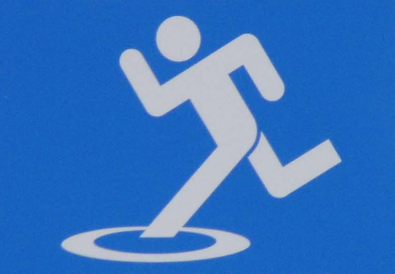

Submit Response
Look at the picture of a sign found in Japan.

What does it indicate to you?
You have reached a safety point.
Watch out for open manhole covers.
Watch out for puddles of water.
None of the above.